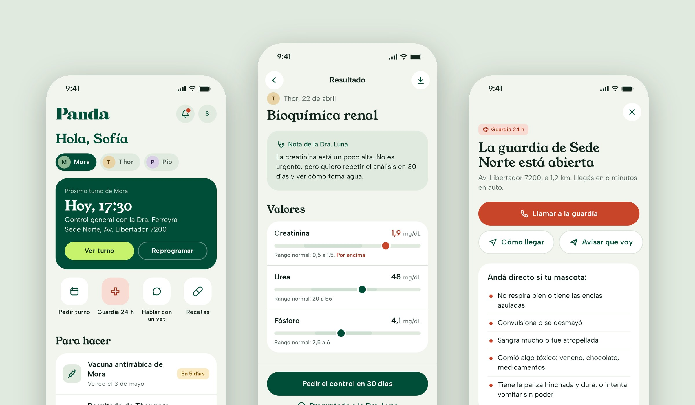
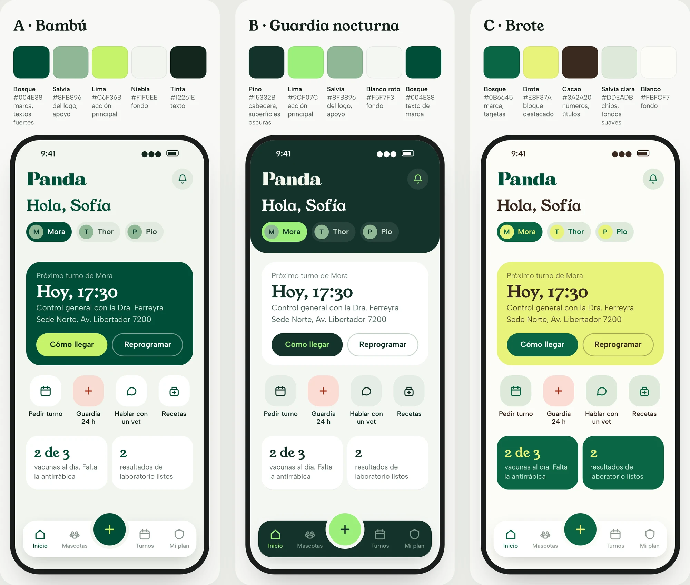
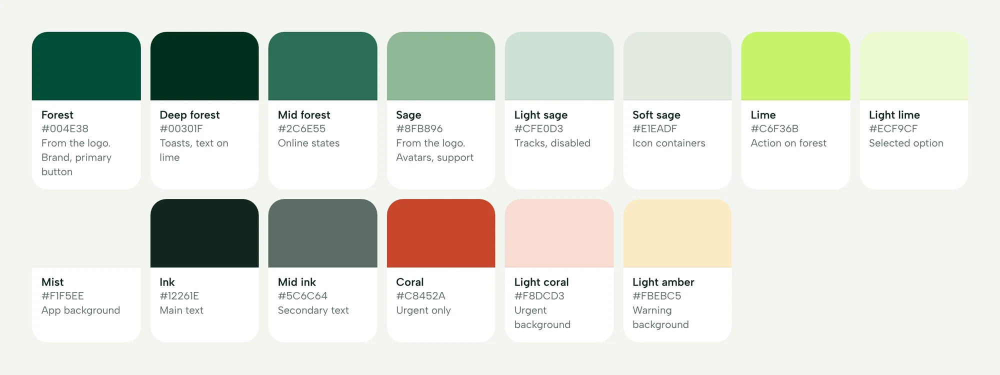
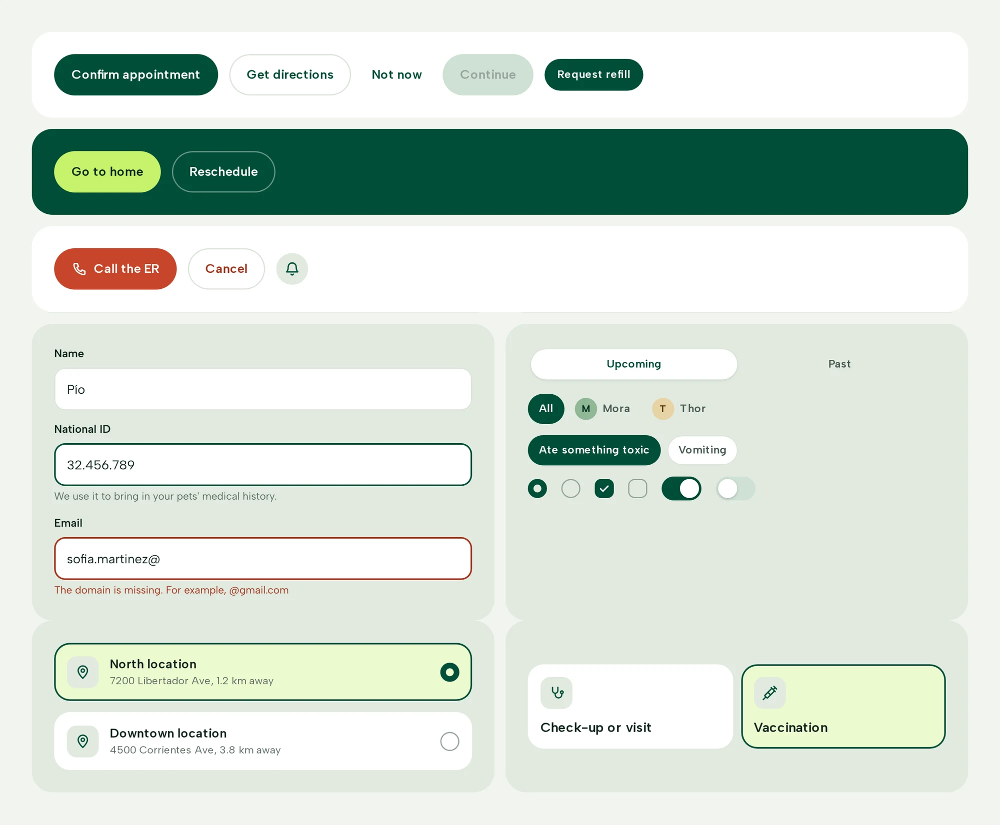
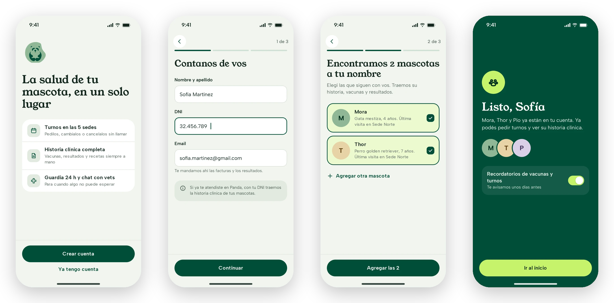
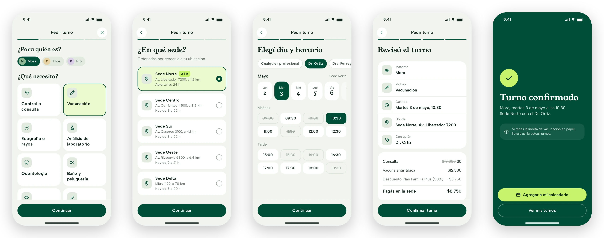
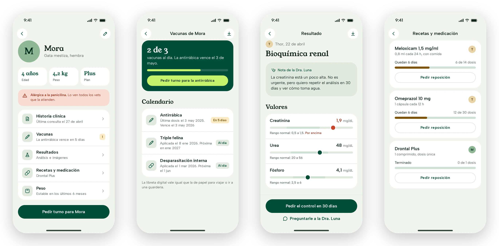
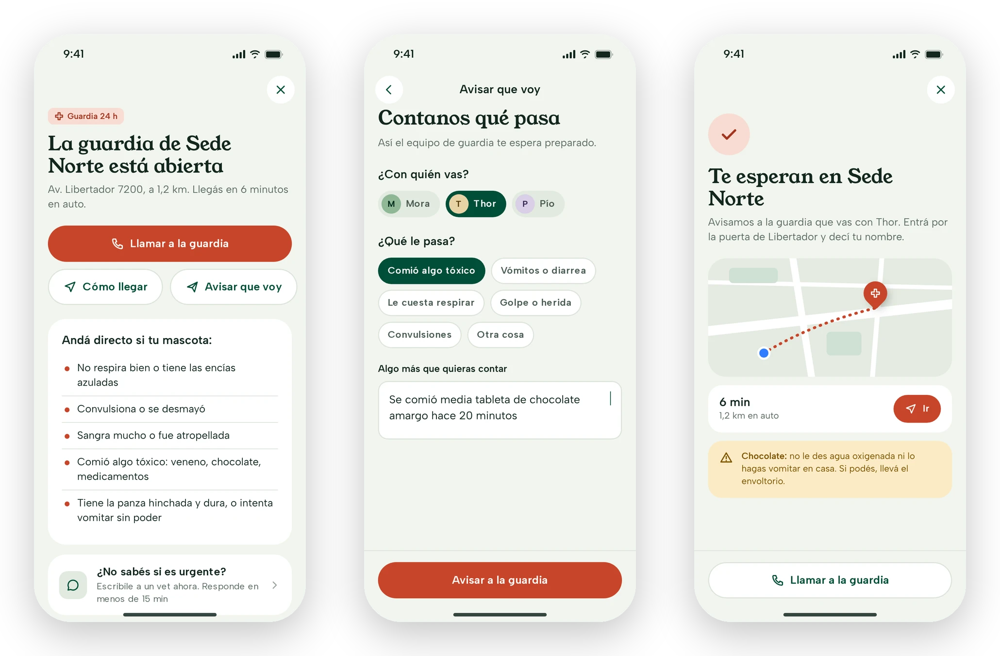
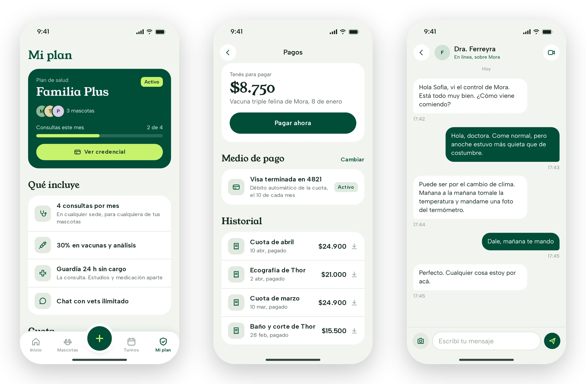

Work in progress · Pet health · Mobile app
Panda: a pet’s whole care, in one place.
I’m redesigning the app of Panda Clínica Veterinaria, a network of veterinary clinics in Buenos Aires open since 1994, with several locations and 24-hour emergency care. A new look and feel built from its brand, a design system and every flow a pet owner needs, from signing up to getting to the ER.

Context & Problem
Everything a pet needs, scattered across calls and chats.
Panda has locations across the city, 24-hour emergency care, specialists from surgery to exotic animals, and a health plan for pets. For an owner, all of that lives in different places today: each location’s phone number, WhatsApp, emails with lab results and a paper vaccination booklet.
There was already a first prototype, with standalone screens and two roles in the same app. The ask was a full redesign: a pet’s care shouldn’t depend on remembering dates or finding the right phone number.
What I set out to do:
- A look of its ownBring Panda’s brand into the app, warm and calm.
- Complete flowsEnd-to-end journeys, not standalone screens.
- A system that scalesTokens and components for whatever comes next.
What I designed:
- OnboardingSMS sign-up and adding pets.
- AppointmentsBook, review, reschedule and cancel.
- Pet healthHistory, vaccines, results, prescriptions and weight.
- Plan, payments and ERCoverage, invoices, vet chat and the 24-hour ER.
The process
Where the project stands.
It’s a redesign without its own research yet, so the decisions below are hypotheses to validate with pet owners and the clinic’s team.
The first prototype mixed the owner app with the vet team’s. We decided to focus on owners only, to get to complete flows, and to leave the team view for a later stage.
- 01 Audit what existedEleven screens, two roles and no complete flow.
- 02 From brand to paletteThree palettes from the logo, tested on the same screen.
- 03 Design systemTokens, type, components and voice.
- 04 Complete flows43 screens in a clickable prototype.

Design system
A system for caring without rushing.
The colors come from the logo: forest green and sage. I added a lime only for what you can tap, and a coral reserved for emergencies. Young Serif for headings, because it echoes the logo’s serif, and Albert Sans for the interface.

- Clinical calmPeople usually open the app when they’re worried: plenty of air and one important thing per screen.
- Urgency has its own colorCoral is only for the ER, allergies and out-of-range values, so it keeps its weight.
- One main actionOne primary button per screen: forest on light, lime on forest.

Decisions
The decisions behind the flows.
1. Sign-up that finds your pets
You sign in with your phone number and an SMS code, no password. With your national ID, the app checks whether you’ve been to Panda before and brings in your pets with their history, instead of asking you to enter everything again.

2. Booking in four steps, with the cost before you confirm
Pet and reason, location, day and time, then review. Booked slots stay visible but struck through, and before confirming you see what the plan covers and what you’ll pay at the clinic. From the appointment you can reschedule or cancel, and when you cancel the app offers to reschedule if the problem is the day.

3. Show the status, not just the data
Every vaccine says whether it’s up to date or when it’s due, every lab value is shown against its normal range with the vet’s note on top, and every prescription shows how many doses are left. A pet’s allergy appears on its profile, in coral, so nobody misses it.

4. The ER, one tap away, with a heads-up
The 24-hour ER lives on the home screen and opens the nearest open location, with buttons to call and get directions, and a short list of when to go straight there. On your way, you can tell them what’s wrong with your pet so the team is ready, and the app tells you what not to do in the meantime.

5. The plan and payments, without the fine print
My plan shows what’s included and how much has been used this month, and you can compare it with the other plans before switching. Payments brings together what’s due, the automatic debit and downloadable invoices. For anything that isn’t urgent there’s a chat with a vet, also offered from the ER screen for people who aren’t sure their case is urgent.

Prototype.
All 43 screens, clickable. Tap through the screen or jump to any step from the list. It’s in Spanish, like the app.
What’s next
A work in progress, with a lot to validate.
There are no results yet. These are the next steps and what’s still open.
- Test with pet ownersStarting with booking and the ER, the most frequent and the most critical flows.
- The clinic’s real dataLocations, hours, plans and prices, to replace the placeholders.
- The team viewAgenda, messages and results for vets, on the same design system.
- How does the plan work?What it covers, per pet or per family, and how it connects to booking and payments.
- Which channel do owners use today?Phone, WhatsApp or the front desk: that defines what the app needs to solve first.
Next case
ShiftMed →Getting healthcare workers from download to their first shift, and paid the same day